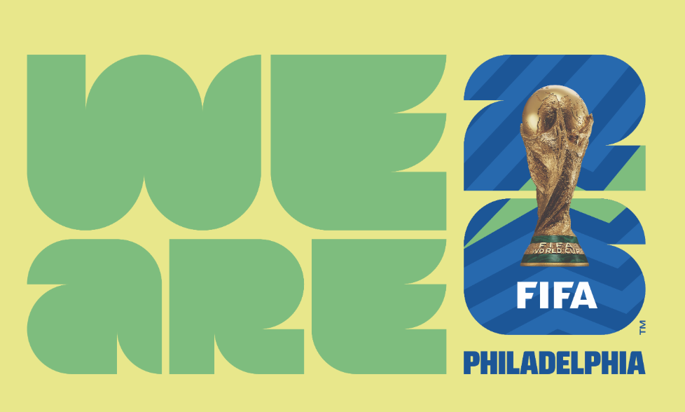
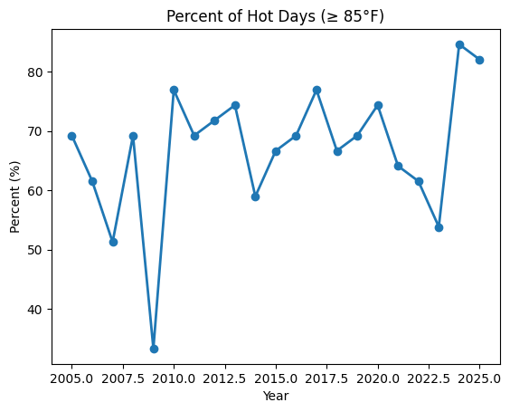
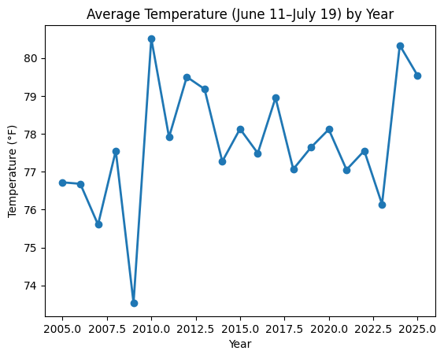
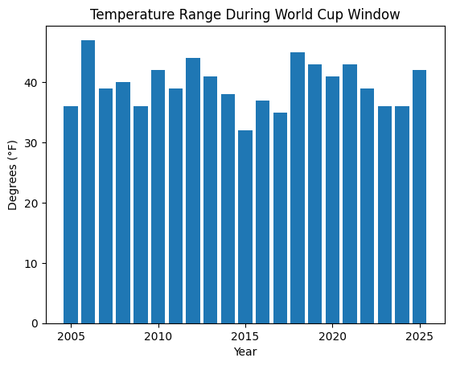
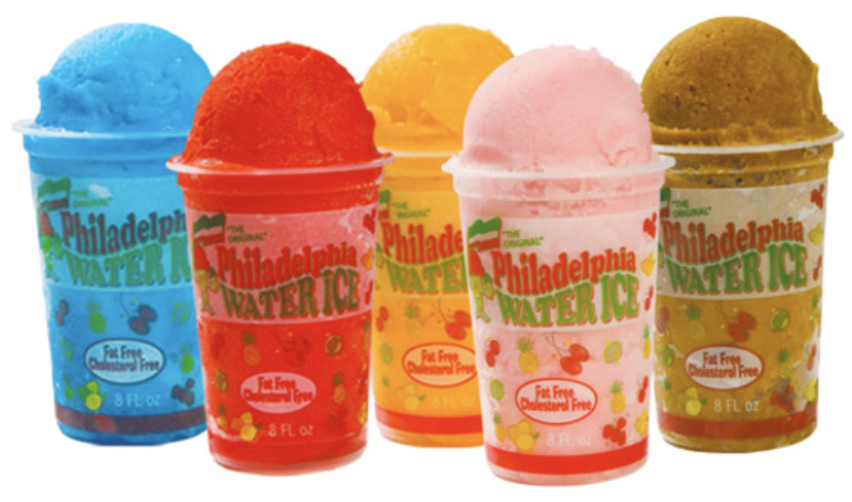

import pandas as pd
import numpy as np
import matplotlib.pyplot as pltThis summer of 2026, Philadelphia will host the FIFA World Cup! Whether you’re a Philadelphia native or someone across the globe, one important question remains: what kind of weather should fans expect?
Philadelphia summers are known for their heat and intense humidity, but how intense is that heat really? To answer this question, I analyzed 20 years of historical weather data (2005–2025) for Philadelphia, focusing specifically on the World Cup window: June 11 through July 19. While my analysis cannot predict the exact weather you can expect this summer, it can provide a strong sense of what you are most likely to experience based on long-term trends!

weather_df = pd.read_csv('data/philadelphia_weather_2005_to_2025.csv')
weather_df = weather_df.assign(date=pd.to_datetime(weather_df['date']))The first step in my analysis was to see how often there are hot days during the World Cup timeline (June 11 - July 19)? Using a threshold of 85°F, I calculated the percentage of days in each year during the World Cup window that exceeded this temperature.
The results show a clear pattern. In most years, between 60% and 75% of days during this period reached at least 85°F. Several years exceeded 80%, meaning that nearly every day during the window was hot. Only one year (2009) stands out as a significantly cooler outlier.
worldcup_df = weather_df[((weather_df["month_num"] == 6) & (weather_df["day_num"] >= 11)) |((weather_df["month_num"] == 7) & (weather_df["day_num"] <= 19))]
worldcup_df = worldcup_df[(worldcup_df["year"] >= 2005) & (worldcup_df["year"] <= 2025)]worldcup_df["hot_day"] = worldcup_df["high"] >= 85hot_days_per_year = worldcup_df.groupby("year")["hot_day"].mean() * 100overall_hot_day_percent = hot_days_per_year.mean()plt.plot(hot_days_per_year.index, hot_days_per_year.values, marker='o', linewidth=2)
plt.xlabel('Year')
plt.ylabel('Percent (%)')
plt.title('Percent of Hot Days (≥ 85°F)')
plt.show()
This chart clearly illustrates that most days during the World Cup timeline will be hot! Fans attending matches should expect hot conditions on most days, not just during occasional heat waves. Thus, panning for sustained heat, rather than brief exposure, will be key –> definitely remember to bring water and sunscreen!
How Hot Does It Feel on Average?🌡️
To understand the overall intensity of this Philly heat, I calculated the average daily temperature for each year by averaging daily highs and lows across the World Cup window.
Across the 20-year span, average temperatures consistently fall between 76°F and 80°F (with very few years dipping below that range). More recent years, however, appear to sit toward the higher end of this band, with 2024 and 2025 standing out as particularly warm.
worldcup_df["avg_temp"] = (worldcup_df["high"] + worldcup_df["low"]) / 2avg_temp_per_year = worldcup_df.groupby("year")["avg_temp"].mean()overall_avg_temp = avg_temp_per_year.mean()plt.plot(avg_temp_per_year.index, avg_temp_per_year.values, marker='o', linewidth=2)
plt.xlabel('Year')
plt.ylabel('Temperature (°F)')
plt.title('Average Temperature (June 11–July 19) by Year')
plt.show()
As you can see: even in relatively “mild” summers, Philadelphia remains solidly warm during this period, with some years having more milder temperatures, and other with larger!
Temperature Ranges in Philadelphia🌤️
I also wanted to see the ranges of temperatures during the World Cup 2026 timeline. To find this, I calculated the temperature range for each year by subtracting the coolest daily low from the hottest daily high during the World Cup window.
Most years show a temperature range between 30°F and 45°F, indicating large swings within the same summer period.
max_temp_per_year = worldcup_df.groupby("year")["high"].max()min_temp_per_year = worldcup_df.groupby("year")["low"].min()temp_range_per_year = max_temp_per_year - min_temp_per_yearavg_temp_range = temp_range_per_year.mean()plt.bar(temp_range_per_year.index, temp_range_per_year.values)
plt.xlabel('Year')
plt.ylabel('Degrees (°F)')
plt.title('Temperature Range During World Cup Window')
plt.show()
As demonstrated from the bar chart above, this variability is extremely high: ranging from the 30s to 40s. Fans may experience cool mornings followed by intense afternoon heat, sometimes within the same day!
While no dataset can predict the exact weather of the 2026 World Cup, I believe that history offers a clear guide for what to expect. Philadelphia summers during mid-June through mid-July are consistently hot, often unpredictable, and rarely mild. For fans, the best strategy is not to hope for cool weather but to prepare for another hot Philly summer!

Expect to enjoy lots of water ice and ice cream to cool down during the 2026 World Cup!